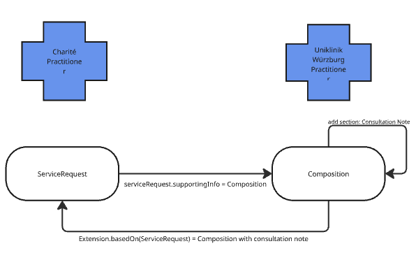
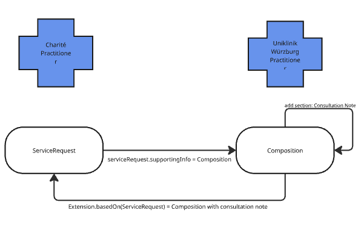

http://exmple.org/fhir/sid/Laborgruppe
http://fhir.de/CodeSystem/Kontaktebene
http://fhir.de/CodeSystem/kontaktart-de
http://fhir.de/ValueSet/kontaktart-de
https://example.com
https://fhir.kbv.de/CodeSystem/KBV_CS_SFHIR_BAR2_ARZTNRFACHGRUPPE
https://www.medizininformatik-initiative.de/fhir/modul-consent/CodeSystem/mii-cs-consent-consent_category
urn:oid:2.16.840.1.113883.3.1937.777.24.5.3
This fragment is not visible to the reader
This publication includes IP covered under the following statements.
|
prtoprlogo.png  |
|
tree-filter.png
|